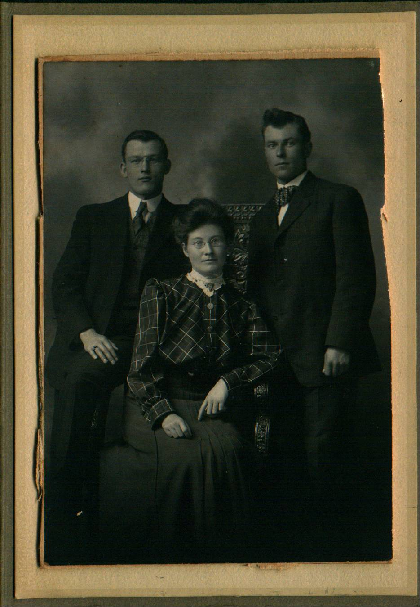
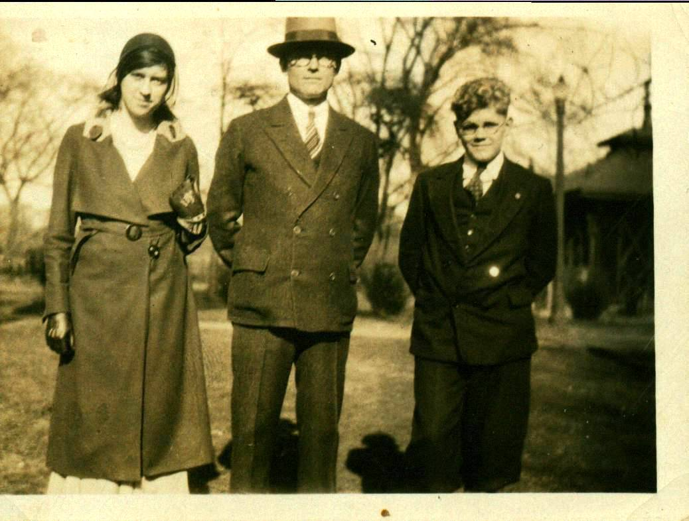
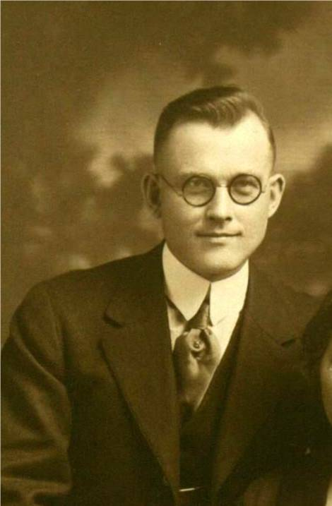
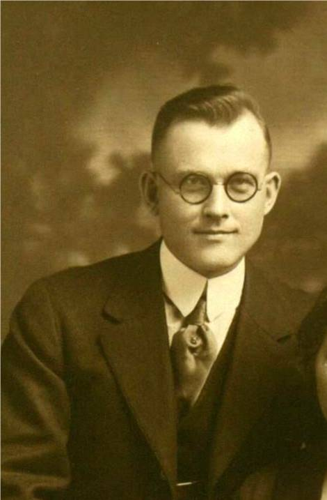

The Family Chronicle
No. 164 November 2, 2008
John (Jack) MacDonald Watling


 

Photos from my Mother’s collection: (Left to right): George, Janet and Jack Watling; Grace Glendenning with her Jack Watling and, presumably, Ernest Watling; Jack, Erdine and son, Ernest; Jack Watling
Mother’s brother, John (Jack) MacDonald Watling, like others in the family, left Black River as a young man for life in the USA; unlike others, however, he did not remain in contact. Recently, while on a visit to Bar Harbour (Swans Island, where Jack lived, died and is buried is just off-shore from Bar Harbor) I gathered some additional information and decided to publish my updated information in this Chronicle.
Descendants of John MacDonald Watling
Generation No. 1
1. JOHN MACDONALD5 WATLING (JUBAL4, JUBAL3, JUBAL2, FAMILY1)1 was born April 23, 1886 in Black River Bridge, NB1, and died March 3, 1953 in Swans Island, Maine1. He married (1) EDITH BARRON1. She was born 1890, and died May 2, 1915 in Portland Maine. He married (2) ERDINE BELLE KENT1. She was born May 1, 1890 in Swans Island, Maine, and died May 3, 1979 in Rockport, Maine.
Notes for JOHN MACDONALD WATLING:
Aunt Janet said that John lived in Portland and moved to Boston during the depression, Elbridge thinks that he also worked at a garage or in a shop; may have sold real estate. Grace often visited Uncle Jack; Mildred MacKay said that he often invited young people from Black River to his place. Grace also visited him at Eastport, near Portland. He lived one winter with his brother, Jim at Little Branch.
Email from Gwen May on October 17, 2008 provides the following information:
1930 United States Federal Census
Name: John Watling
Home in 1930: Cambridge, Middlesex, Massachusetts
Age: 44
Estimated Birth Year: abt 1886
Birthplace: Canada
Relation to Head of House: Head
Spouse's Name: Erdine
Race: White
Household Members: Name Age
John Watling 44
Erdine Watling 40
Earnest Watling 13
More about JOHN MACDONALD WATLING:
Burial: Grindle Hill Cemetery, Swans Island, Maine
Notes for EDITH BARRON:
Died of consumption;
More about EDITH BARRON:
Burial: Black River Cemetery
Notes for ERDINE BELLE KENT:
Died after a long illness; Gwen May, of Swans Island wrote on October 14, 2008 "I remember Erdine well. She was a fun, happy person. I think she is in some of the pictures on the website but I'm not sure. Someone in the family gave us pictures of family gatherings that she was in. Erdine was a cousin of mine through her mother, Lil. Lil and my grandfather were sister and brother."
More about ERDINE BELLE KENT:
Burial: Rose Hill Cemetery, Swans Island, Maine
Child of JOHN WATLING and ERDINE KENT is:
2. i. ERNEST VICTOR TAINTER (ADOPTED)6 WATLING, b. March 14, 1917, Swans Island, Maine.
Generation No. 2
2. ERNEST VICTOR TAINTER (ADOPTED)6 WATLING (JOHN MACDONALD5, JUBAL4, JUBAL3, JUBAL2, FAMILY1)1 was born March 14, 1917 in Swans Island, Maine. He married MARY LOUISE BURNS. She was born August 23, 1924 in Swans Island, Maine.
Notes for ERNEST VICTOR TAINTER (ADOPTED) WATLING:
A search of Watling Swans Island revealed the following in "The Families of Swans Island from the 1700's to the Present"
“Fifth Generation
Ernest Victor (Tainter) Watling (son of Blanchard G. Tainter and Alda Lucy (Elda) Smith) was born on March 14 1917 in Swans Island, Hancock County, Maine, USA. He was adopted. Raised by cousin Erdine Kent and husband Jack Watling following parents death from 1918 flu. Goes by name of 'Ernest Watling'. Lived at Rockland. Mary Louise Burns and Ernest victor (Tainter Watling had the following children: Carolyn Williams (Ed: Believed to be adopted)”
Child of ERNEST WATLING and MARY BURNS is:
CAROLYN WILLIAMS (ADOPTED)7 WATLING.
The Family Chronicle (Copyright) is an occasional newsletter published by Don Glendenning and posted on the family website. It is intended to share information about my family, community and the times in which I grew up. While every effort is made to be accurate, errors are likely to occur. Comments, enquiries and information may be sent to 62 Queen Elizabeth Drive, Charlottetown, PEI, C1A 3A9. Tel: 902 892 5859. Email: don@glendenning.net Web: www.glendenning.net/don